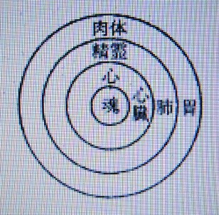
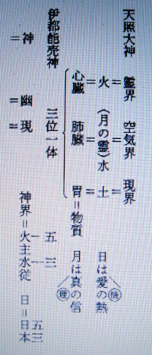
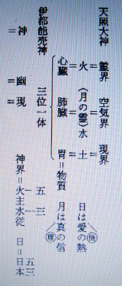
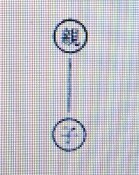
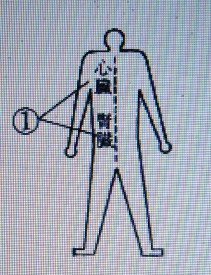
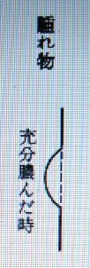

病気の根本原因について ２
明主様御講義 「病気発生の原因」 （昭和11年7月）
「前述のごとく、本療法は実に霊医術であり、特に「心臓医学」ともいうべきもので、心臓が根本になるんであります。
そして前にも、お話致した通り、病気が発生するというのは霊的原因としては、自己の邪念や不純行為により、魂に曇を生ずるからであります。
ここで、病気に対して、霊的定義を下してみましょう。
「病気とは・・・人間の悪念及び悪行為に因る罪穢の堆積が精霊を曇らし、それが、血液の溷濁（こんだく）となるので、
その汚血を、心臓と肺臓が、燃焼と洗浄作用をする結果、それの残渣（ざんさ）が物質化して毒血となり、膿汁となり、それの排除作用が、即ち、病気現象である」
魂は「人間の小雛形」ともいうべきものであるから、魂の方の胸のあたりへ曇が発生すると・・・心を通じて精霊へ移り、肉体へと映るのであります。
図に記きますと、左の通りであります。

曇が、内部より外部へ表われるものは・・・自己的病原であります。
しかるに、他動的に、外部からの原因による事もあるのであります。
例えば、人から、怨まれたり、羨やまれたりすると、それらの人の悪念が「一種の曇」となって、
こちらの魂へ来射し、曇らすので、それが病原となる事も多いのであります。
しかし、右二つの原因は、いずれも霊的であるが、それらの外に「体的の病原」もあるのであります。それは・・・、
大酒を飲むとか、娼婦に接するとか、極端な不摂生をするとかによって病気になるのであって、これは一般世人のよく知っているところであります。
洋漢医学の病原説は、ほとんどこの体的のみの解釈でありました。
しかし、これは再三述べたごとく、表われた半面であって、他の半面・・・即ち、隠れたる霊的原因こそ、真の病原であるので、
この認識のない限り完全な治療法は確立しない事は申すまでもありません。
今一つ有力な病原として祖先の罪穢に因るそれを説かなければなりません。
祖先の罪穢とは・・・、絶えず祖先が霊界において「霊の浄化作用」を行われる結果、
その残渣ともいうべき汚濁が「子孫」即ち吾々へ流れて来て、それが病気となるのであります。
吾々個人とは、実に、祖先と子孫との間をつなぐところの 一連の鎖の・・・その一個に過ぎないのであります。
故に「祖先の行為」が吾へ結果し「吾の行為」が子孫へ結果するのは当然であります。
坊さんの持っている数珠は「祖先代々の魂の繁り」を表わしたもので、
あれを揉んで、お経をあげると「祖先各々の罪穢」が、その功徳によって浄化消滅するというのであります。
大体、病原なるものは、前述のごとく数種あるのであります。
そうして、それら曇の排除作用が病気であるから、病気が発生するや・・・、
曇の物質化であるところの「水膿毒血」は、極力外部へ外部へと排除されようとするのであります。
それはちょうど天然現象と同じようなもので、風邪を引いて咳をし、痰を吐く事など、
ちょうど大風が吹いて穢を払う、大雨が降って汚れを洗い流すのと同じ理であります。
故に、あらゆる一切の物象は絶えず汚濁され「断えず、浄化作用が行われている事が原則である」のを知らなくてはならないのであります。
これを別な意味からの定義にすれば、
「病気とは・・・健康保持の為の、又は、死を免れしむる為の不断の浄化作用の苦痛である」
このように人間は・・・
「病気によって、健康保持が出来、病気によって死を免れるのである」
と聞いたら、現代人は驚倒するでありましょう。
しかし、今日までそれに気付かなかっただけであって、病気といえば直に不治を連想し、死を予想して恐怖して来た事の、いかに大きな誤りであったかが知られるのであります。」 （「岡田先生療病術講義録 上巻２」より）
明主様御講義 「病気の根本原因」 （昭和10年9月15日発行）


「病気の初めは霊に曇りが寄って来る。この曇りが出来る為に血が濁る。この血は霊の物質化したものである。
人が死ぬと血が非常に減ってしまうのだが、医学は血は凝結して終うのだと言っているが、ただ単に凝結するが為にあれ程減少するのでは決してない。
血の中から何か減るから凝結して少し、ホンの少しばかりになってしまうのである。
この沢山ある、この血液を多量にしているのは霊が物質化しているからなのである。
死亡するとこの霊が抜け出すから自然いつとはなしに減少して来るのである。
この濁った血が益々多くなり、それが浄化作用を起すと浄化された粕が白い物になる。
この白い粕は白色元素となり、濁った血のところから放出されているのである。
人体には漿液があるが、この漿液の中へ白色原素が溜るとそれが膿となる。
水膿とはこの淡（うす）いものであります。
それが段々膿液となるのである。
この膿液が段々濃くなり、多くなるに従い病気が発生するのである。
故に霊体の曇りが病気の原因であり肉体へ出たのは結果なのである。
支配階級の人が原因を出しておきながら下級の赤化を直そうとしてもこれは絶対に直らんのもこの病気と同様の意味である。
一例を申せば、二ケ月もかゝって瘍（よう）を手術した。
瘍は癒ったが霊の曇りが除れんから又隣へ出る。
又一ケ月もかゝって切って癒ったが又出来た。医者には千円も支払ったのである。
ところが又出来た。今度は私が一週間で金八円で癒したのである。
この様な事で医者は霊の曇りが何で出来るかと言う根本を研究せずに、ただ結果である瘍を切るから何回でもその又隣りへ出来る訳であって、
医者は細胞に曇りが出来た事が原因だと思いレントゲンを掛けたりするが、霊を知らないものには判らんのが当然であります。
膿の極く濃いものは癌であります。
組織を破壊されてしまう病気である。
水膿の濃くなるのが結核であるが、その又濃いのが出ると細胞の組織を破壊されるのである。
これが即ち癌である。
膿も黄色から白くなり、透明な水のごとき漿液となるのである。これは霊気で浄化されるからである。
横痃（よこね）（梅毒の股へ出たもの）は黄色い水が出る。
二週間位で癒ったが、医者にやらせると汚いどろどろの赤貝のごときものが出るが、霊的にやれば溶けて水となるのである。
曇りはどうして出るかと言うと、霊体の弱いところへ出るのであるが、その原因は祖先のと自己の罪穢であって、なぜ曇りが弱いところへ出るかと言うと、同じ頭を使うにしても善に使うとか悪に使うとかで差が出来るのである。
悪に使えば頭が弱くなる。又善に使えば強くなるのである。発明家は強くなる。
肺病は肺が弱いのであるが、それはどうかと言えば肺は空気を吸い、心臓は霊気を吸っているのである。
太陽熱を吸っているのである。肺病は熱が出て来る。（中略）
 

なぜ肺臓が弱るかと言うと愛が不足しているからである。
肺は水なり。水は火によりて動くのだ。肺は心臓の熱によりて動くのである。
心臓の熱の少いのは愛が少いのであるから愛の行いをすればよいのである。
総てを愛するのである。
その根本として観音様を拝む様にするのである。
観音様を拝むと前には人が笑っておれば癪（しゃく）にさわるといって怒っていたのがお祭りしてから反って嬉しくなり楽しくなったというのである。
これは実例なのである。
心臓の悪い人は理性に乏しいのであります。
心臓の火の燃えている原因は水分が沢山あるから、続いて燃えているのであって
水が沢山ある中（うち）はよいが水が足らんと理性に乏しいことになるのである。
パーッと燃えるだけだからである。
観音様は火と水との働きであるから両方を程よく下さるのである。
胃の悪いのは物質を粗末にするのが原因である。
贅沢を言う人の胃の悪いのはこの原因である。
何んでも不味い物でも食べる人は胃は丈夫だ。
総て感謝がなければいけないのである。
常に感謝の生活をして居れば胃に罪は起らんから常に胃は丈夫で病気は起らんのである。心すべき事である。
腹は地下に相応するのである。
腹は地熱であるから、胃の物が腹へ下って清算される事となるので、胃へはいったものは総て腹へ下って行って清算される事となるので、ちょうど土も下へ穢い物を濾（こ）して水を下へ下して地下水となり、
又汲み出されては使用されて、この様に、腹は悪い物は濾して粕は糞として下へ出し、水分は小便にして腎臓へ送る。
又良いものは肝臓へ送るのである。
肝臓とはこの意味からきたものである。
この様にしてこれへ肉をつけ皮をつけるのである。
肺が悪いと寝汗をかくのが普通である。
心は火なり。心の字は八に丶丶を横に打ってあるが、八に跨がせれば火となるのである。
心臓は肺に囲まれているのである。

子供は何かと言うと親の世話になっている内は連絡している。
この親の罪が移るのである。
子供の病気は何かと言うと子が親の罪を移されるのであります。
親に必要な事があっても罪があって病気になる様な時、その親を使わねばならぬ用事が出来ている為親の罪を子に負わせているのであります。
親に用事がある時はその子に移すのであるが、子の死ぬ場合があるが、これは親の代りになって行くのであります。

人体全体の曇りはどこから来るかと言うと祖先から来るのである。
祖先と現在の人間との間は霊線で繋っているのである。
医学では遺伝といっているが、この遺伝も事実遺伝せぬ時もあるのであるから、遺伝学説も絶対とはならなかったが、しかしこの事は絶対なものであるが、
その間に偉い人が出て徳を積むとその徳によりその罪が除かれるから切れて終って遺伝せぬ事になるのである。
この遺伝は絶えず霊界から流れて来るのである。
祖先は霊界において審判されて浄化されるからその審判され洗われた罪が現界人へ流れて来るのである。
祖先等が霊界から飛出して来て憑るのは生前無信仰の為霊界へ行っても所属すべき団体がないので行くところがないので
致し方なく出て来て自分の子供へ憑くので病気になる。

祖先の罪穢は脊髄を中心にして来る。
祖先―頭―脊髄―尾―子孫。
我々は現在子孫だから尾である。
男も女も皆子孫であるからこれより来ているのである。
この脊髄へ流れて来た罪穢は下へ降って方々へ行く。
頭、目、鼻、心臓、腎臓とどこへでも行くのである。
脊髄は万病の源である。

万病は自然に癒るが、それにつき痛み、熱、痰、毒血を吐く。
腫物、下痢、毒血の下るのは赤痢であるから毒血が出て終えば一日位で癒る。
罪穢は脊髄の三分の一位の所と尻へ出て来るのが普通である。
病気は霊の曇りから出ると前にも話したが、この曇りが毒血となるのである。
これがある程度となると、解消運動が自然に人体内において起るのである。
この解消運動が始まると、自然に浄化された粕は排出されて癒るのである。
霊界に曇りの溜った時は大雷、台風、大暴風雨となり解消するのである。
この天地の諸々の現象なき時は世界人民の間にどの様な病気が起るかも判らんのである。
神様は御慈悲の為に天地の自然現象の様にしてこの曇り穢れたる世の中の御清潔をなされ、病気の根源を掃除して下さるのである。
人間に曇りが出来ると台風や大暴風雨が体内に起りてこれの解消運動が始まるのである。
曇りの濃くなったものを溶かす為に心臓が太陽熱を吸収して曇りへ送ります。
曇りへ太陽熱が送られるから熱が出る。それにより腫物になって毒が出るのである。
この毒の体外へ腫れ出た時充分膿ませるのである。
充分膿むと図の様に外部へ突出して来る。
そして自然に吹き切って膿が出て癒るのである。

この状態になった時ならば、切っても良いのであるが、充分膿んだ時切れば、全部毒が出て終うから忽（たちま）ち全快するが、
医者に切って貰うにも充分毒が出て来て突出た時ならば全快するのであるが、
医者は直ちに切開するため、未だ奥の方に沢山膿があるのを外部だけ切り取るから、
又その隣へ毒が出て又腫物が出来るのである。
又切れば又出来る。
何回でも繰返すのである。充分出た時切れば一回で治るのである。
観音力で治せば浄化するから痛まず癒り、膿が淡（うす）くなるから早くなるのである。

子供の疫痢も最初は胎毒（水膿）が胃へ来るのであってその為に吐いたり熱が出るのである。
それを医者は吐いたり熱が出て自然治癒工作をしているのを止めるから自然治癒の妨害をするのである。
西洋医学は治癒の妨害であるから治らんのである。
氷で冷すのは最も悪いので、治すには熱が必要であるのを反対に冷すから熱の活動を止めて終う為癒らんのである。
反って悪くなるのは当然である。
熱が出て毒を道筋方面へ送ろうとするのを冷すから道筋方面へ行けずこれが肺の辺りへ寄るから肺気腫なぞになるのである。
腫物の出来て腫れるのは活力があるからよいのであります。
活力がなければ腫れ出る事が出来んから膿を取る事が出来ぬ。
これを永く続けて居れば死ぬより外に仕方がなくなるのは当然なのだ。
腫れ物を捨てゝ置けば腫れて膿が出て終うのを医者のある国に生れ医者を保護する法律のある国に生れたのが不幸なのであります。
薬は皆逆作用を来すのである。
便秘、胃病等はこれである。葡萄糖注射も悪い。
便秘は下剤を飲むから反って便秘を起す事になるのである。カルシューム注射も悪い。
これは水分の少い人又は体に熱のある人等が便秘する。
これらは水分を多く採ればよい。それでない人は熱をとれば便秘は癒るのである。
下剤をかけると薬により下るから大便を出す機関が退化して働かなくなるから益々便秘する様になるのである。
薬を飲んで治そうと飲めば飲む程便秘するのである。
胃が悪いから薬を飲む。
飲むから働かぬ様になる。
働かぬから又飲む。鼬（いたち）ごっことなり胃病となり、胃癌となり、喰えなくなるからブドー糖注射をやる。
それにより又働かなくなる。
この内に死ぬより仕方なくなるので誠に気の毒な事である。
カルシユーム注射をすると一時肥るが、その内に痩せて来て駄目になるのである。
蕁麻疹（じんましん）はカルシューム注射の中毒である。
出来物に薬を塗るとおできが治らぬ様に薬で止めるから全治しない。
一時治ったと思い、又治った様に見えるのは引込んだのであるから又その内に出て来るのである。
薬を飲むと胃に入り腹に入り心臓に入る。食物は良いが薬は心臓に入ると血液が濁る。
血液が濁れば体が弱るのである。注射液は直接心臓に入りて血に混じるから一層悪いのである。
人間の体は常に浄化作用をしているからその粕が肩や首に寄るのが多いのである。
これは罪穢の病源とは違うのである。
肩が凝り、脳溢血を起し易いが先祖の罪穢よりは軽いのである。
なお又毒が下へ降って行くものもある。
脊椎や腰へ注射して足へ下りて来て踝（くるぶし）や関節へ固るのはこれで、これは仲々治らんものである。
注射も絶対的のものでないから絶えず研究して作るから益々色々の病気が起る事になる。
的確に治るものもあるが、大抵二三日位で起る。
今度は前より一層悪くなって起って来るから反って悪いのだ。
これは一時的に止めるのであるから注射は反って悪い。
最も恐ろしいのは赤坊に注射をする事である。
赤坊に注射をすると発育が止るから実に困るのである。
人間は絶対に薬を入れてはならん。
病気したならば直に観音力で治療する事である。
観音力は百パーセント癒るからである。
黴菌は人間の血液浄化作用に神様が作ったのである。
何も彼も必要だから神様が作られるのだ。
黴菌や虫はあまり人から恐れられ怨まれて気の毒なものである。
多く黴菌の為に人間が健康に導かれたり美味い酒や味噌醤油まで皆この恩恵に与っているのである。
絶対健康法
人間に曇りを無くすることが健康法の根本であります。これは光に浴することが一番で光にふれることである。
朝夕観音様を拝む事は光にふれる事で、光に照されることである。
魂に光を受けるから清まるのである。
この光に大、中、小がある。本部が大であり、支部が中であり、自家の観音様が小なのである。
それ故曇りが取れて病気が起らなくなるのである。
観音会に病気が無いのはこれが為である。
又徳を積む事である。
徳を積めばその徳により光が増すのである。
人を救う。善い事をすると感謝となって、光となってその人へ報い来るのであります。
その為その人に威厳が増すから恭敬（うや）まわれるのである。
魂の穢れた人は徳がないから光がない。始終ビクビクしているから卑しく見えるのだ。
徳を積むには神様の事、社会の事、個人を救う事をどんどんやるのである。
その人が仮に病気をしていて人を救うことが出来んというかも知れんが、病気中なれば病気をしながらも人を救う様に世話をするのである。
神様の有難いことを話して神様を信ずる様にするなり、病人なれば神様へ御治療を受けに行く様にする事である。
この様にすれば病人でもその徳により自分の病気が直ちに癒るのであるから余計に神様からお光をいたゞくのである。
信者を一人作らしていたゞくのや導くのは大変な御用である。
その人が他人を救う。
又その救われた人が又救うという様に鼠算式に信者が殖えると大変なことになる。
それが絶対の健康法なのである。
体的本位の健康法は末である。
神様の御用をすれば何を喰べても非常に健康なのである。
滋養も衛生も末の末、夜の世界の最後のものである。
滋養は神様の霊気が一番なのである。」 （「観音講座 第七講座」より）